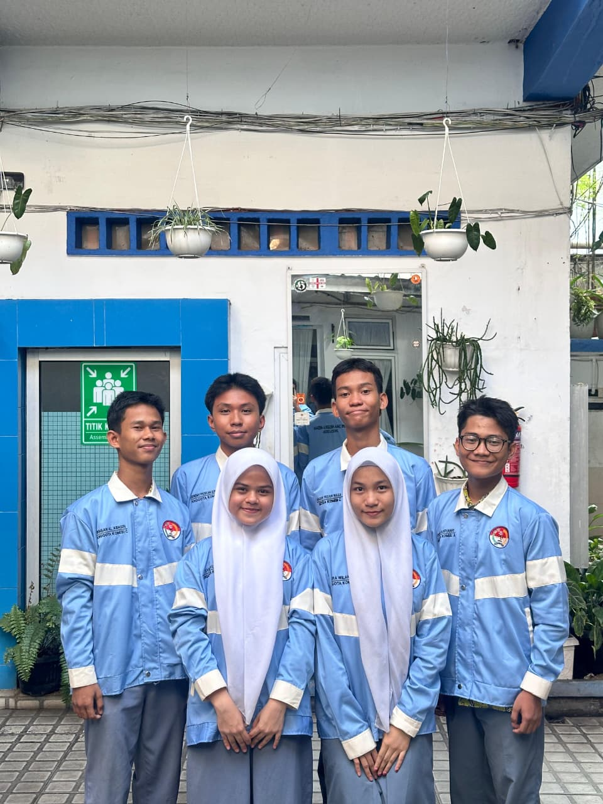

MPK SMAN 6 MEDAN
Pelopor Resmi Pengaduan Siswa SMA NEGERI 6 Medan
Pelopor Resmi Pengaduan Siswa SMA NEGERI 6 Medan
Menangani Peraturan & AD/ART

Komisi A MPK merupakan komisi yang membidangi peraturan organisasi serta AD/ART (Anggaran Dasar dan Anggaran Rumah Tangga).